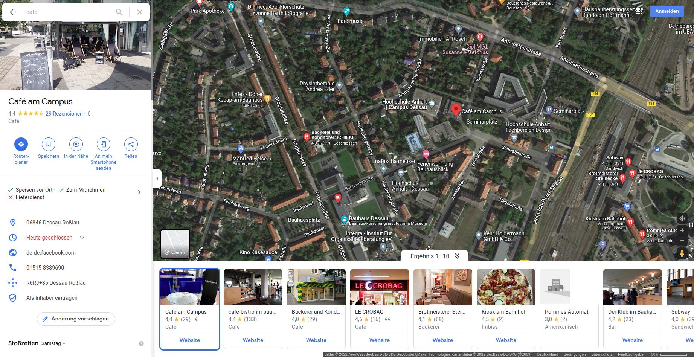

Hochschule Anhalt
Anhalt University of Applied Sciences
Fachbereich Architektur, Facility Management und Geoinformation
Institut für Geoinformation und Vermessung
Anhalt University of Applied Sciences
Fachbereich Architektur, Facility Management und Geoinformation
Institut für Geoinformation und Vermessung
Technischer Vergleich von Cloud Optimized GeoTIFFs mit bewährten OGC-Standards wie dem WMS, WMTS oder TMS im Bereich WebGIS
Gliederung
- Einleitung
- Standards
- Datenverarbeitung
- Datenbereistellung
- Nutzung der Daten (WebGIS)
- Methodik
- Ergebnisse
- Zusammenfassung
Einleitung

Google Maps

Geoportal-BW

FairFleet
Standards
TMS
WMS
WMTS
COG
Tile Matrix Set (TMS)


Web Map Service (WMS)


https://geoserver.masterarbeit-cog.de/ows?
SERVICE=WMS&
VERSION=1.3.0&
REQUEST=GetMap&
LAYERS=wms:ortho_strenzfeld&
STYLES=&
CRS=EPSG:3857&
BBOX=1299642,6765837,1304883,6769892&
WIDTH=768&
HEIGHT=490&
FORMAT=image/pngWeb Map Tile Service (WMTS)
https://geoserver.masterarbeit-cog.de/gwc/service/wmts?
Service=WMTS&
Version=1.0.0&
Request=GetTile&
layer=wmts:ortho_strenzfeld&
style=&
tilematrixset=WebMercatorQuad&
Format=image/vnd.jpeg-png&
TileMatrix=15&
TileCol=17447&
TileRow=10849
Cloud Optimized GeoTIFF (COG)


Datenverarbeitung


TMS
Anzahl der Threads cat /proc/cpuinfo | grep processor | wc -l gdal2tiles.py --zoom=0-20 -s EPSG:3857 --processes=24 ./Ortho.tif ./Ortho-TMS/ MultiResolution gdal2tiles.py -p mercator -s EPSG:3857 -z 0-20 --processes=24 ./../000_inputData/ortho_lindenrain.tif ./tms/ortho_lindenrain-multi/ ; \ gdal2tiles.py -p mercator -s EPSG:3857 -z 21 --processes=24 ./../000_inputData/ortho_lindenrain.tif ./tms/ortho_lindenrain-multi/ ; \ gdal2tiles.py -p mercator -s EPSG:3857 -z 22 --processes=24 ./../000_inputData/ortho_lindenrain.tif ./tms/ortho_lindenrain-multi/ ; \ gdal2tiles.py -p mercator -s EPSG:3857 -z 23 --processes=24 ./../000_inputData/ortho_lindenrain.tif ./tms/ortho_lindenrain-multi/WMS / WMTS
COG
Datenbereistellung
TMS / COG
FileServer
WMS / WMTS
GeoServer
Nutzung der Daten
Minimal WebGIS
HTML:
TypeScript:
import Map from 'ol/Map';
import View from 'ol/View';
import OSM from 'ol/source/OSM';
import TileLayer from 'ol/layer/Tile';
const map = new Map({
layers: [
new TileLayer({source: new OSM()})
],
view: new View({
center: [0, 0],
zoom: 2
}),
target: 'map'
});TMS
import TileLayer from 'ol/layer/Tile';
import XYZ from 'ol/source/XYZ';
const TMS = new TileLayer({
extent: [1299642, 6765838, 1304883, 6769892],
preload: Infinity,
source: new XYZ({
attributions: 'Institut für Geoinformation und Vermessung (IGV), Hochschule Anhalt',
minZoom: 0,
maxZoom: 21,
url: 'https://data.masterarbeit-cog.de/tms/ortho_strenzfeld/{z}/{x}/{-y}.png'
}),
})WMS
import Image as ImageLayer from 'ol/layer';
import ImageWMS from 'ol/source/ImageWMS';
const wms = new ImageLayer({
extent: [1299642, 6765838, 1304883, 6769892],
source: new ImageWMS({
attributions: 'Institut für Geoinformation und Vermessung (IGV), Hochschule Anhalt',
url: 'https://geoserver.masterarbeit-cog.de/wms',
params: {'LAYERS': 'wms:dsm_strenzfeld'},
serverType: 'geoserver',
ratio: 1,
}),
});WMTS - Vorbereiten
import {get as getProjection} from 'ol/proj';
import {getTopLeft, getWidth} from 'ol/extent';
const projection = getProjection('EPSG:3857');
const projectionExtent = projection.getExtent();
const size = getWidth(projectionExtent) / 256;
const resolutions = new Array(22);
const matrixIds = new Array(22);
for (let z = 0; z < 22; ++z) {
// generate resolutions and matrixIds arrays for this WMTS
resolutions[z] = size / Math.pow(2, z);
matrixIds[z] = z;
}WMTS
import TileLayer from 'ol/layer/Tile';
import WMTS from 'ol/source/WMTS';
import WMTSTileGrid from 'ol/tilegrid/WMTS';
const WMTSLayer = new TileLayer({
extent: [1299642, 6765838, 1304883, 6769892],
source: new WMTS({
attributions: 'Institut für Geoinformation und Vermessung (IGV), Hochschule Anhalt',
url: 'https://geoserver.masterarbeit-cog.de/gwc/service/wmts',
layer: 'wmts:ortho_strenzfeld',
matrixSet: 'WebMercatorQuad',
format: 'image/vnd.jpeg-png',
style: '',
projection: projection,
tileGrid: new WMTSTileGrid({
origin: getTopLeft(projectionExtent),
resolutions: resolutions,
matrixIds: matrixIds,
}),
}),
});COG
import GeoTIFF from 'ol/source/GeoTIFF';
import TileLayer from 'ol/layer/WebGLTile';
const COGLayer = new TileLayer({
source: new GeoTIFF({
sources: [
{
url: 'https://data.masterarbeit-cog.de/cog/ortho_lindenrain.tif'
},
],
})
})
COGLayer.getSource().setAttributions('Institut für Geoinformation und Vermessung (IGV), Hochschule Anhalt');